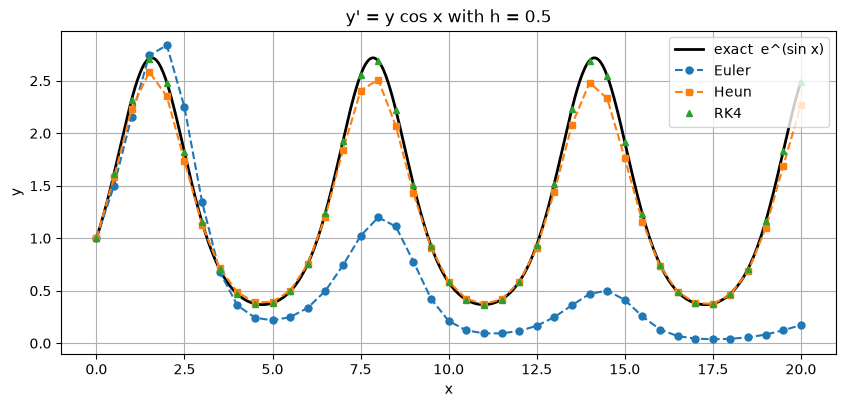

RK4 uses four slopes per step and has order 4. For smooth, non-stiff problems it gives an excellent balance of accuracy and simplicity, which is why it is the method most people mean by “Runge–Kutta”. This section derives it, introduces the Butcher tableau notation that describes every Runge–Kutta method, and explains the order conditions that determine a method’s order.
Test problem: \(y' = x + y\), \(y(0) = 1\), exact solution \(y = 2e^{x} - x - 1\).
Code
import numpy as npimport matplotlib.pyplot as pltplt.rcParams["figure.figsize"] = (7, 4.5)plt.rcParams["axes.grid"] =Truenp.set_printoptions(precision=6, suppress=True)f =lambda x, y: x + yexact =lambda x: 2* np.exp(x) - x -1def euler(f, x0, y0, h, n): x, y = np.zeros(n +1), np.zeros(n +1) x[0], y[0] = x0, y0for i inrange(n): y[i +1] = y[i] + h * f(x[i], y[i]) x[i +1] = x[i] + hreturn x, ydef heun(f, x0, y0, h, n): x, y = np.zeros(n +1), np.zeros(n +1) x[0], y[0] = x0, y0for i inrange(n): k1 = f(x[i], y[i]) k2 = f(x[i] + h, y[i] + h * k1) y[i +1] = y[i] + h /2* (k1 + k2) x[i +1] = x[i] + hreturn x, y
3.1 Derivation from Simpson’s rule
Simpson’s rule weights the midpoint four times as heavily as the ends:
RK4 estimates the midpoint slope twice, each time more accurately than the last, and splits the weight \(4\) into \(2 + 2\):
\[
\begin{aligned}
k_1 &= f(x_n,\ y_n) && \text{slope at the start}\\
k_2 &= f\!\left(x_n + \tfrac{h}{2},\ y_n + \tfrac{h}{2}k_1\right) && \text{slope at the midpoint, reached using } k_1\\
k_3 &= f\!\left(x_n + \tfrac{h}{2},\ y_n + \tfrac{h}{2}k_2\right) && \text{slope at the midpoint, reached using the better } k_2\\
k_4 &= f\!\left(x_n + h,\ y_n + h k_3\right) && \text{slope at the end, reached using } k_3\\[4pt]
y_{n+1} &= y_n + \tfrac{h}{6}\big(k_1 + 2k_2 + 2k_3 + k_4\big)
\end{aligned}
\]
The weights \(\tfrac{1}{6}, \tfrac{2}{6}, \tfrac{2}{6}, \tfrac{1}{6}\) add up to 1, so \(\tfrac{1}{6}(k_1 + 2k_2 + 2k_3 + k_4)\) is a weighted average slope. The local error is \(O(h^5)\) and the global error \(O(h^4)\): RK4 is order 4, and halving \(h\) divides the error by about 16. Each step costs 4 evaluations of \(f\).
When \(f\) depends on \(x\) only, \(y' = f(x)\), the stages \(k_2\) and \(k_3\) coincide and RK4 is Simpson’s rule.
Code
def rk4(f, x0, y0, h, n): x, y = np.zeros(n +1), np.zeros(n +1) x[0], y[0] = x0, y0for i inrange(n): k1 = f(x[i], y[i]) k2 = f(x[i] + h /2, y[i] + h /2* k1) k3 = f(x[i] + h /2, y[i] + h /2* k2) k4 = f(x[i] + h, y[i] + h * k3) y[i +1] = y[i] + h /6* (k1 +2* k2 +2* k3 + k4) x[i +1] = x[i] + hreturn x, y
Worked example: RK4 by hand, first step with \(h = 0.1\)
Exact: \(y(0.1) = 1.1103418\). The error is \(1.7 \times 10^{-7}\), about 60,000 times smaller than Euler’s first step.
3.2 Seeing the slopes
One large step (\(h = 0.5\)) from \((0, 1)\) shows where each method samples the slope. Short arrows mark each sampled slope; the dashed line is the step actually taken.
Expanding each method’s formula for one step, symbolically in \(h\):
Method
One step gives
First term missed (local error)
Predicted at \(h=0.1\)
Actual
Euler
\(1 + h\)
\(h^2\)
\(1.0 \times 10^{-2}\)
\(1.03 \times 10^{-2}\)
Heun
\(1 + h + h^2\)
\(h^3/3\)
\(3.3 \times 10^{-4}\)
\(3.42 \times 10^{-4}\)
RK4
\(1 + h + h^2 + \frac{h^3}{3} + \frac{h^4}{12}\)
\(h^5/60\)
\(1.7 \times 10^{-7}\)
\(1.69 \times 10^{-7}\)
(For RK4: \(k_1 = 1\), \(k_2 = 1 + h\), \(k_3 = 1 + h + \tfrac{h^2}{2}\), \(k_4 = 1 + 2h + h^2 + \tfrac{h^3}{2}\); substituting gives the expression in the table.)
This is the real meaning of order: a method of order \(p\) reproduces the Taylor series of the true solution through the \(h^p\) term. The first term it misses, of size \(h^{p+1}\), is the local error. Over \(1/h\) steps these add up to a global error of \(h^p\).
3.4 All three methods side by side
Code
h, n =0.1, 10x, ye = euler(f, 0, 1, h, n)_, yh = heun(f, 0, 1, h, n)_, yr = rk4(f, 0, 1, h, n)yx = exact(x)print(f"{'x':>5}{'Euler':>10}{'Heun':>10}{'RK4':>12}{'Exact':>12} "f"{'|err| Eul':>10}{'|err| Heun':>10}{'|err| RK4':>10}")for i inrange(n +1):print(f"{x[i]:5.1f}{ye[i]:10.6f}{yh[i]:10.6f}{yr[i]:12.8f}{yx[i]:12.8f} "f"{abs(ye[i]-yx[i]):10.2e}{abs(yh[i]-yx[i]):10.2e}{abs(yr[i]-yx[i]):10.2e}")xf = np.linspace(0, 1, 200)plt.plot(xf, exact(xf), "k", lw=2, label="Exact 2eˣ − x − 1")plt.plot(x, ye, "o--", label="Euler")plt.plot(x, yh, "s--", label="Heun")plt.plot(x, yr, "^", ms=8, label="RK4")plt.title("y' = x + y, y(0) = 1, h = 0.1")plt.xlabel("x"); plt.ylabel("y"); plt.legend();
max difference between explicit_rk(RK4) and rk4: 8.881784197001252e-16
3.6 Order conditions
Section 2.3 found the conditions for order 2 by matching Taylor series. Doing the same at higher order gives one condition for each distinct term (“elementary differential”) in the Taylor series of the exact solution. In tableau notation, with \(\mathbf{c} = (c_i)\), \(\mathbf{1} = (1, \dots, 1)\) and powers of vectors taken componentwise:
(Here \(\ast\) is the componentwise product.) A method has order \(p\) if it satisfies every condition up to and including order \(p\).
The code checks every tableau against these conditions.
Code
def order_conditions(t): A, b, c = t["A"], t["b"], t["c"] one = np.ones_like(b)return {1: [(b @ one, 1)],2: [(b @ c, 1/2)],3: [(b @ c**2, 1/3), (b @ (A @ c), 1/6)],4: [(b @ c**3, 1/4), (b @ (c * (A @ c)), 1/8), (b @ (A @ c**2), 1/12), (b @ (A @ A @ c), 1/24)], }def order_of(t): p =0for order, conds in order_conditions(t).items():ifall(abs(value - target) <1e-12for value, target in conds): p = orderelse:breakreturn pfor name, t in TABLEAUX.items():print(f"{name:9s} stages = {len(t['b'])} order (from conditions) = {order_of(t)}")
Euler stages = 1 order (from conditions) = 1
Heun stages = 2 order (from conditions) = 2
Midpoint stages = 2 order (from conditions) = 2
Ralston stages = 2 order (from conditions) = 2
Kutta3 stages = 3 order (from conditions) = 3
RK4 stages = 4 order (from conditions) = 4
3/8 rule stages = 4 order (from conditions) = 4
How fast the conditions multiply. The number of order conditions grows quickly with the order:
Order \(p\)
1
2
3
4
5
6
7
8
Conditions (total)
1
2
4
8
17
37
85
200
Minimum stages
1
2
3
4
6
7
9
11
The second row is Butcher’s barrier result: up to order 4 you need exactly \(p\) stages, but beyond that the number of stages exceeds the order. Order 5 costs 6 evaluations per step. This is why RK4 is such a sweet spot: it is the highest order you get “at the price of the order”.
3.7 Checking the orders numerically
The order conditions say what should happen. To confirm it, run each tableau on a nonlinear problem (as Section 2.4 showed, a linear test problem can hide differences between methods). Use the logistic equation
The observed orders match the order conditions: about 1 for Euler, 2 for the two-stage methods, 3 for Kutta’s method and 4 for both four-stage methods.
3.8 Large steps on a smooth problem
High order pays off most when the solution is smooth and the interval is long. Take
with a large step \(h = 0.5\) (only 40 steps over about three periods).
Code
w =lambda x, y: y * np.cos(x)w_exact =lambda x: np.exp(np.sin(x))h, n =0.5, 40xf = np.linspace(0, 20, 600)plt.figure(figsize=(10, 4.2))plt.plot(xf, w_exact(xf), "k", lw=2, label="exact e^(sin x)")for name, method, style in [("Euler", euler, "o--"), ("Heun", heun, "s--"), ("RK4", rk4, "^")]: x, y = method(w, 0, 1, h, n) plt.plot(x, y, style, ms=5, label=name)print(f"{name:6s} max |error| on [0, 20] = {np.max(np.abs(y - w_exact(x))):.2e} ({n * {'Euler': 1, 'Heun': 2, 'RK4': 4}[name]} f evaluations)")plt.xlabel("x"); plt.ylabel("y"); plt.title("y' = y cos x with h = 0.5"); plt.legend();
Euler max |error| on [0, 20] = 2.32e+00 (40 f evaluations)
Heun max |error| on [0, 20] = 2.22e-01 (80 f evaluations)
RK4 max |error| on [0, 20] = 2.20e-03 (160 f evaluations)

With only 40 steps, RK4 is visually indistinguishable from the exact solution, while Euler’s solution has drifted far from it.
3.9 Summary
RK4: four stages, order 4, Simpson’s rule in disguise.
A Butcher tableau \((A, \mathbf{b}, \mathbf{c})\) describes any Runge–Kutta method; one generic function can run them all.
A method has order \(p\) when its tableau satisfies all order conditions up to order \(p\). Their number grows rapidly, and beyond order 4 more stages than the order are needed.
Exercises
Take one RK4 step with \(h = 0.1\) for \(y' = y\), \(y(0) = 1\). Show that the result is \(1 + h + \frac{h^2}{2} + \frac{h^3}{6} + \frac{h^4}{24}\) and compare it with \(e^{0.1}\).
Show by hand that Kutta’s third-order method satisfies the four conditions for order 3.
Show that for \(y' = \lambda y\) one RK4 step multiplies \(y_n\) by \(R(z) = 1 + z + \frac{z^2}{2} + \frac{z^3}{6} + \frac{z^4}{24}\) with \(z = h\lambda\). (This polynomial reappears in Section 5.)
The tableau with \(c = (0, 1)\), \(a_{21} = 1\) and \(b = (1, 0)\) is consistent (\(\sum b_i = 1\)). What is its order, and why is it a poor method?
Answers
\(k_1 = 1\), \(k_2 = 1 + \tfrac{h}{2}\), \(k_3 = 1 + \tfrac{h}{2} + \tfrac{h^2}{4}\), \(k_4 = 1 + h + \tfrac{h^2}{2} + \tfrac{h^3}{4}\). Substituting gives the Taylor polynomial: \(1.1051708\overline{3}\) against \(e^{0.1} = 1.1051709181\).